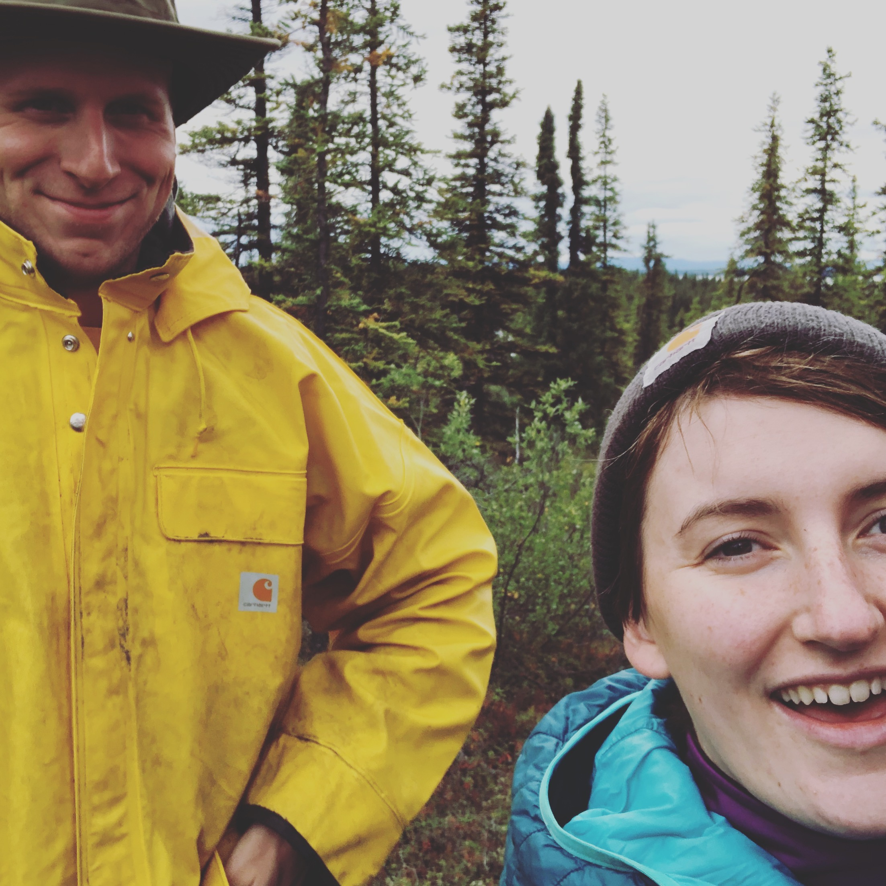
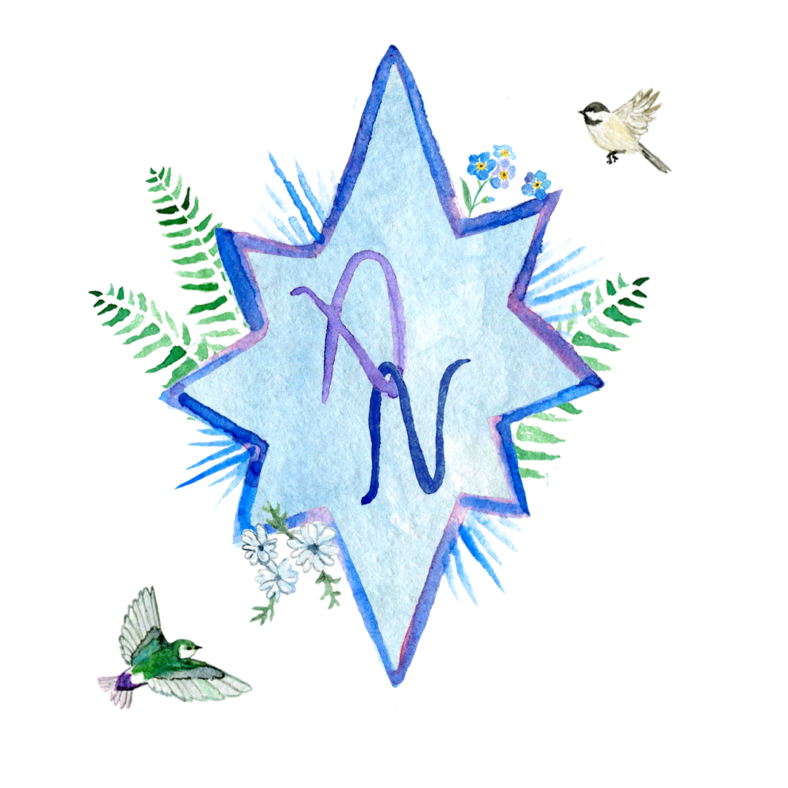

Join us in Eagle River, Alaska for a backyard picnic wedding! The ceremony will be held at the home of Roy & Tito Williams (Ava’s grandparents), followed by a cake, punch & appetizer reception.
July 20, 2019
Eagle River, Alaska
Please RSVP (preferably by May 20) by filling out this form. If you have any questions, please email us at avaandnick2019@gmail.com.
Paper invitations to come!
Unless you're driving the AlCan, out-of-towners will fly in to the Ted Stevens Anchorage International Airport (ANC). We suggest you start looking for tickets as soon as possible, since July is a popular tourist month!
How do you get around once you're here? We highly recommend you rent a vehicle--something you can do right from the airport--or carpool with a friend. Cars are the #1 way to get around in Alaska.Eagle River has a nice variety of Airbnb and VRBO listings, along with a few hotels and B&Bs. It’s also just 25 minutes away from Anchorage (the BIG city), where you'll find an abundance of hotels.
Here’s a brief outline of the wedding weekend:
Rehearsal & rehearsal dinner for the wedding party Friday evening.
The wedding and reception will be held in the evening at the home of Roy & Tito Williams (Ava’s grandparents).
We've reserved two large group sites at Eklutna Lake Campground. Guests are welcome to stay one or both nights or spend the days at Eklutna. There’s a glacial lake, excellent trails, bike rentals, kayak rentals, and a beautiful (slightly difficult) hike. This will be a bring-your-own-food/tent event, but if you have any questions or need to borrow something, let us know and we might be able to help!
Our registry is available on Zola.
July in Alaska can be a little rainy*, but temperatures are often in the 60s. We recommend bringing a light layer or shawl to the wedding. And since it will be in a yard, some shoes that can handle grass & gravel would be a good idea!
*Crossing fingers for sun, but we have a tent either way!
Since our wedding begins later in the evening (7pm), we recommend you eat an early dinner or very late lunch beforehand. Of course, we will have plenty of appetizers, cake, and punch for you at the reception!
Ava is currently healing from an injury in her right arm— she addressed many envelopes with her left hand (kind of impressive, huh?). That, or it is Nick’s handwriting.
If you have any questions, please email avaandnick2019@gmail.com.
